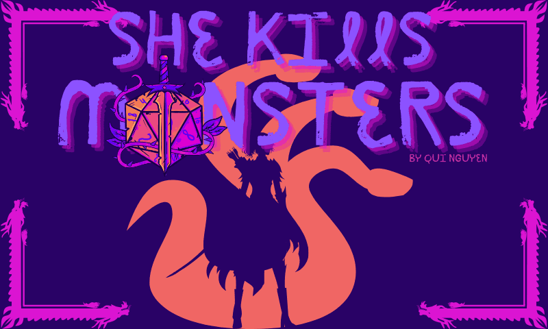

CM Student | Web Developer | Game Designer | Creative Thinker
My legal name is Frank Banich. I am a second year at GT, and my major is Computational Media. My goal is to be a game designer. I am involved with the video game development club, and I am currently working as a level designer on two games, and I'm currently working as a sound designer for Dramatech theater's upcomming production of She Kills Monsters.
"Make colors fly as you fight to the beat in this action rhythm game! Traverse the island, meet new Paper pals, and bring the island Back to Bassics!" (Coming December 2024)
Watch the trailer"After a malfunction at your research site, you are shunted deep into the Shiftscape, a realm where space and time do not follow our rules. Solve puzzles and explore this interdimensional space as you try to find your way back home." (Coming December 2024)
Watch the demo"She Kills Monsters tells the story of Agnes Evans as she leaves her childhood home in Ohio following the death of her teenage sister, Tilly. When Agnes finds Tilly’s Dungeons & Dragons notebook, however, she finds herself catapulted into a journey of discovery and action-packed adventure in the imaginary world that was her sister’s refuge. In this high-octane dramatic comedy laden with homicidal fairies, nasty ogres, and 90s pop culture, acclaimed playwright Qui Nguyen offers a heart-pounding homage to the geek and warrior within us all" (Opens November 8th 2024)
Email: fbanich3@gatech.edu
LinkedIn: My LinkedIn profile
GitHub: My GitHub profile